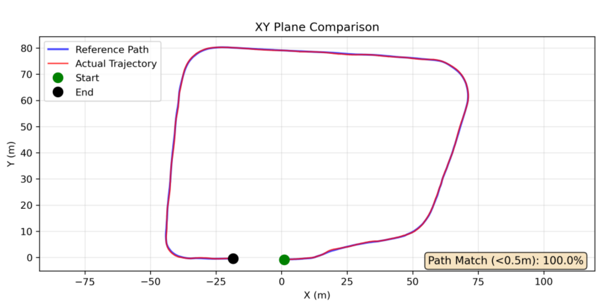
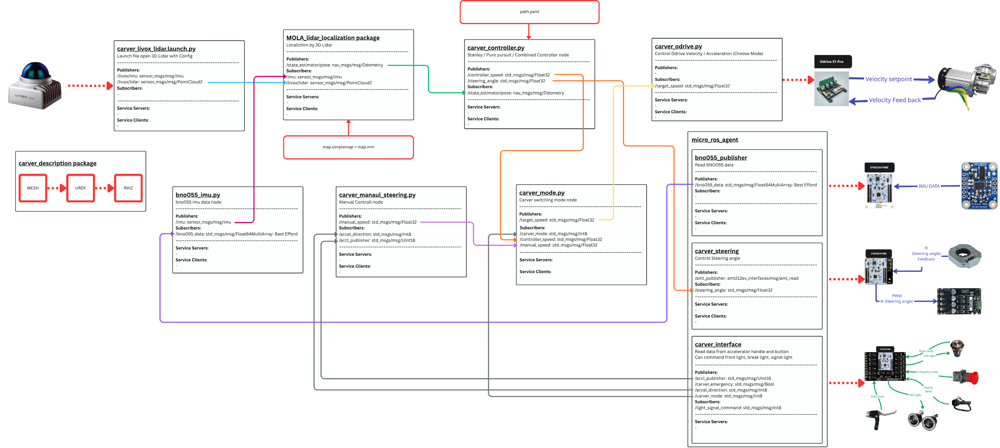
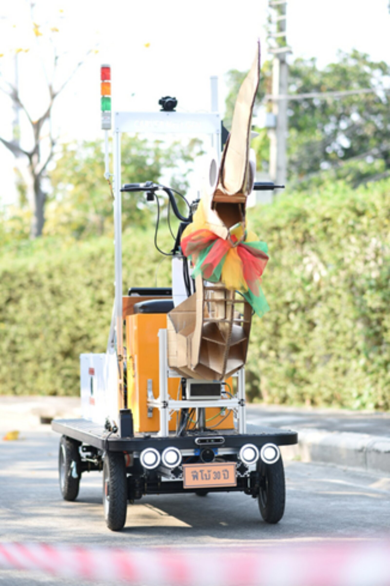
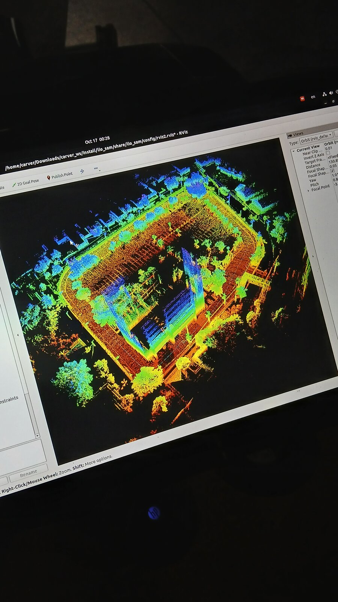

Overview
Autonomous navigation for CARVER, an Ackermann-steered mobile robot, built for the Advanced Robotic Control and Simulation with ROS 2 course. A car-like robot cannot turn in place, so path following depends on steering geometry, and localization has to hold up along curved paths.
Localization runs on a Livox 3D LiDAR with the MOLA package, and micro-ROS firmware on STM32 boards handles steering, sensing, and the driver interface. Three path followers, Pure Pursuit, Stanley, and a combination of the two, are compared on the robot for path accuracy and smoothness.
I led the team of five as project manager, reviewed the code and checked the results of every part of the system, from localization to path following, and wrote the unit tests.
Hardware
| Robot | CARVER, Ackermann Steering |
|---|---|
| LiDAR | Livox 3D LiDAR with its built-in IMU |
| IMU | BNO055 |
| Steering | Absolute encoder and PWM motor driver |
| Drive | ODrive S1 Pro for the drive motor |
| Driver Interface | Accelerator handle, emergency switch, and lights |
| Microcontrollers | STM32 Boards Running micro-ROS |
System
| Computer | Intel NUC11PHKi7C Enthusiast |
|---|---|
| Path-Following Rate | 10 Hz |
| Mode Switching Rate | 50 Hz |
| Localization | MOLA LiDAR localization on a prebuilt map |
| Software | ROS 2, micro-ROS, RViz |
Process
Localize with 3D LiDAR
A Livox 3D LiDAR and its IMU feed the MOLA localization package, which tracks the robot against a prebuilt map and publishes its pose.
Follow the path
The controller node reads the path and the pose and outputs a target speed and steering angle, using one of three followers.
- Pure Pursuit.
- Stanley.
- A combination that blends the two with a weight set by the curvature of the path.
Switch between manual and autonomous
A mode node chooses between the controller output and manual commands from the accelerator handle, so a driver can take over at any time.
Drive the hardware
Two parts of the hardware are driven separately.
- STM32 boards running micro-ROS read the BNO055 IMU, close the steering loop with an absolute encoder and a PWM motor driver, and handle the driver interface.
- An ODrive S1 Pro runs the drive motor from the velocity setpoint.
Compare the controllers
Each path follower drives the same path on the robot and is compared for how accurately and smoothly it keeps CARVER on the path.
Results
The combined Pure Pursuit and Stanley follower drove the FIBO path on the real robot. The plot marks 100% of the trajectory within 0.5 m of the reference path.

Figures and Video


